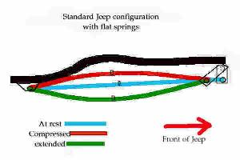
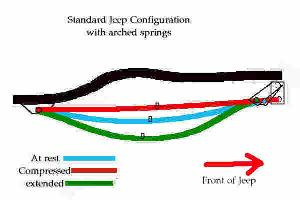
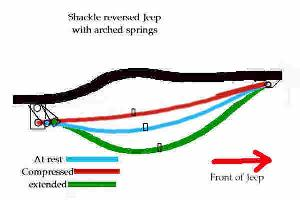

Shackle reversal is one of the most misunderstood Jeep suspension modifications. Most people do not really understand the advantages and disadvantages of shackle reversal. The pros and cons of shackle reversal should be understood before you spend your hard earned money on a kit.
Some argue that if shackle reversal was so great, why didn't they make Jeeps with reversed shackles from the factory? Well they did, the military version of the CJ-5, the M38A1 always had the shackle to the rear. The CJ always had the shackle forward there and it is hard to decide whether Jeep engineers were just unwilling to try new things or intentially built civilian Jeeps shackle forward.
Handling
The purpose of a shackle reversal is to allow the tire move backwards easily when it hits a bump to smooth out the ride. That is the theory at least, but it is important to understand how the axle moves with various spring combinations in order to really understand the handling advantages and disadvantages.
Axle Movement With Flat Springs
When measuring spring length, one normally measures spring eye to spring eye. Obviously, springs do not shrink and grow, but the distance between the eyes changes when they flex. Flat springs are at their maximum length at rest and any flex decreases the distance between the eyes.

With flat arch springs on a CJ or YJ with the conventional setup the tire already goes backwards as it goes up, in fact it also goes backwards as it goes down. This is because the spring is it's longest when it is flat and curving it either way shortens the spring and draws the tire towards the fixed end. This can be demonstrated on any stock YJ by noting the angle of the shackle relative to the frame when it is sitting on flat ground, and then again when one tire has been run up a ramp. On the ramp the bottom end of both front shackles will be more towards the rear than when on flat ground because one spring will be arched positively and one negatively.
Axle Movement With Arched Springs
With heavily arched springs such as used in normal 4" spring under axle lift kits and the conventional fixed spring hanger at the rear the front tire will come forwards when it rises to go over a bump. This is because the spring is moving towards being flat, rather than away from being flat.

As the spring moves towards being flat the arch decreases and the length of the spring increases, pushing the tire slightly forwards.
A shackle reversal puts the fixed end of the spring at the front, which makes the tire go rearwards on compression instead of forwards. This is very desirable for handling reasons. This is why shackle reversals are popular with after market lift springs on YJs and CJs.
Bump Steer
Besides allowing for smoother motion over bumps, a shackle reversal reduces bump steer. This seems a bit hard to imagine at first, but if you look at the arc that the axle travels in with a shackle reversal, you will notice that caster increases as the axle compresses. The increase in caster makes the Jeep track better reducing wander on bumpy roads.
Nose Dive
A Jeep with a shackle reversal and arched springs will suffer from more front end dive during braking than a non reversed Jeep. The reason is similar to the reason for the improved highway ride. When the brakes are applied the tire is effectively pulled hard to the rear of the Jeep by the braking force. On a Jeep with arched springs and a shackle reversal the rearward pull will cause the springs to flatten out or compress. The compression from the tire pulling back combined with the forwards weight transfer that normally happens during braking cause the nose of the Jeep to drop more than a non shackle reversed jeep.
With arched springs and no shackle reversal the force of the tire being pulled towards the rear of the Jeep causes the spring to arch more. The spring arching and the natural forwards weight transfer somewhat cancel each other out and front end dive is limited.
The Driveshaft Problem
Another disadvantage of shackle reversal is the need for a drive shaft with more travel. A long travel drive shaft is required because the tire is going forwards as it goes down and backwards as it goes up. The downward and forward movements add together meaning a drive shaft used with shackle reversal must compress and extend more than a shackle forward driveshaft.
If the drive shaft problem is not dealt with, parts can be broken. A drive shaft that is too short will fall apart when droop is maximized. A drive shaft that is too long can be punched through a transfer case. Long travel drive shafts can be expensive and long travel drive shafts wear quicker than short travel drive shafts.
With no shackle reversal and arched springs the tire goes forwards as it goes up and rearwards as it goes down. The forwards and upward motions partially cancel each other resulting in less of a length change on the driveshaft. The same cancellation effect happens as the tire goes rearwards and down. The result is a fairly normal amount of length change on the driveshaft that the stock slip joint can usually handle.
Tire Clearance
A Jeep with shackle reversal can have the tire move back more than it would with the shackle forward. Clearance for tires should be checked with a shackle reversal to make sure body damage does not occur if a tire comes into contact with a fender.
Bull Dozing
A shackle reversal should not change the approach angle, but it can be built so it slides over obstacles better. With the shackles forward, if you hit a rock dead on, there is a possibility of bending the spring and the shackle will not slide easily over the rock. With a shackle reversal, the front mount can be ramped so the spring pushes over the rock.
Bending Springs
A Jeep with a shackle reversal will be less likely to bend a spring if the spring hits an obstacle. The liklyhood of bending a spring while backing up will be increased with a shackle reversal, but most of the time people are driving in the forward direction.
Tire Contact Pressure
A Jeep with the shackle forward will load the spring and tire when the Jeep is driven into an obstacle. The spring and axle do not move back, so traction is increased. With the shackle reversed, contact pressure will be increase any time the front axle is pushed forward. Here shackle reversal might have a slight advantage when climbing steep hills where the axle wants to move forward. Generally traction is not a problem when you come straight on an obstacle in a flat area.
Conclusion
Both methods have their pluses and minuses. It boils down more to what the rig's purpose is - and personal preferences. If the Jeep is going to be a daily driver as well as weekend trail warrior, forward shackles may be the way to go. If the rig is primary a trail toy and sees more street miles on a trailer than with its tires on the tarmac, then the rear shackles may be more advantageous.
Contributors
Thanks to Dave Gray for the top picture and some tidbits on shackle reversal.

{kind=link}
{kind=link}
{kind=link}